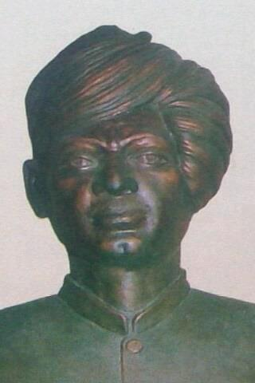

सूर्य कवि, संगीत शिरोमणी, शुकदेव स्वरूप
पं लखमीचन्द सांगी
स्मरणीय सरस्वती पुत्र
जन्म तिथि एवं स्थान : 15-7-1903, गांव जांटी कलां, जिला सोनीपत
स्वर्गवास एवं सांग अवधि : 17-10-1945 (1923 से 1945)
सांग भजन निर्माण : 23 सांग — 924 रागनी, 80 उपदेशक भजन तथा 45 से 50 तर्जे बनाई।
सदगुरू : पंडित मान सिंह सूरदास गावं बासौदी (सोनीपत)
शिष्य : 19 शिष्य (साजन्दों के अतिरिक्त)
सुपुत्र सूर्यकवि पंडित लखमीचन्द सांग कला में राष्ट्रपति पुरष्कार से विभूषित पंडित लखमीचन्द के बाद उनके सांगो के सर्वश्रेष्ठ सांगी (जिनकी सांग अवधि — 1957 से 2008 है)